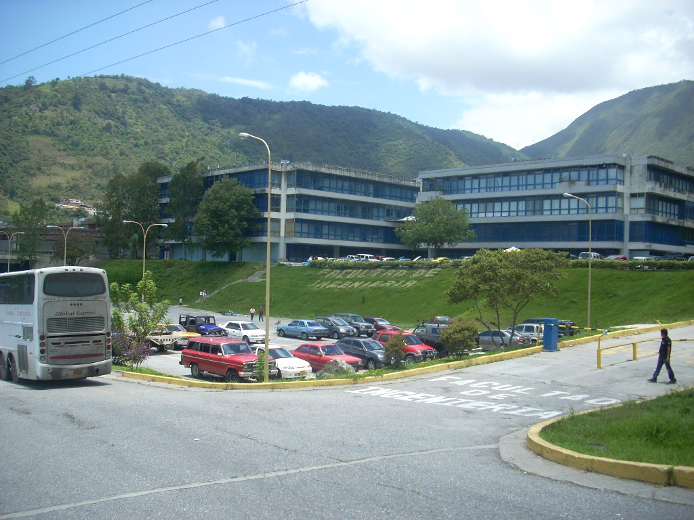

POSTGRADO DE INGENIERÍA QUÍMICA
Quienes Somos
Somos un grupo de Profesionales de la Ingeniería Química, encargados de promover el desarrollo del programa de postgrado que tenga pertenencia social y alta vinculación con el entorno, y así responder a las necesidades de formación de recursos humanos profesionales que demanda el país. Tenemos una escolaridad, de carácter interdisciplinario con un enfoque y conocimiento integrador, sistémico y globalizador, para así estar en sintonía con las corrientes regionales y mundiales que apuntan hacia un desarrollo de planes, programas y proyectos con criterios de sustentabilidad. Se incrementan actividades de postgrado no conducentes a grado académico (cursos breves, de perfeccionamiento profesional, actualización y ampliación de conocimientos) para responder a los requerimientos del sector público en sus áreas prioritarias de actuación, y así estar en sintonía con los lineamientos del Plan de Desarrollo Económico y Social del país.